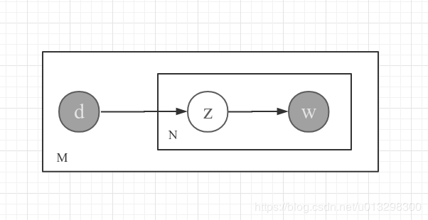

让机器读懂文章-pLSA模型推导及实现
概述
人类读懂文章是一个很自然的行为，当我们读完一篇《背影》的时候，我们就可以知道这篇文章在写些什么，也就是我们说获得了这篇文章的相关知识。有了这些知识，我们就可以回答一些问题，例如:
- 问：这篇文章写的主要内容是什么呢？
答： 亲情、送别 - 问：有类似《背影》这样的文章可以推荐的吗？
答：龙应台-《送别》
虽然上面的问答对任务对人类来说十分简单，但对于机器来说却并不容易。机器对自然语言(中文文本)的理解实际上并不是非常简单的事情，因为自然语言本身是一个高层抽象的概念，而机器只擅长处理量化的知识，例如说让机器记住向量$\vec x=[1, 2, 3]$和$\vec y=[4, 5, 6]$是十分容易的事情，而且可以轻易知道$\vec x$和$\vec y$的相似程度，这只需要计算其记录即可，于是我们对于向量来说就可以完成上面的问题2了。
让我们重新揣摩一下人类读懂文章的过程，实际上我们并不需要背熟每一个字词，而是阅读完成之后再总结出这篇文章主要在写什么，也就是文章的主题。为了让机器能理解文章，我们也需要把这些主题量化出来，形成类似$\overrightarrow {topic}=[‘亲情’: 0.5, ‘送别’: 0.5]$的向量，这种能量化文章主题的模型，也就叫做主题模型了。
在主题模型方面前人们已经做了很多工作，并且取得了非常不错的成效，其中影响较大的是一类模型叫做隐语义模型，而这类模型里面概率隐语义分析也就是本文所述的pLSA则是应用最成功的模型之一，同样成功的模型还有隐含狄利克雷分布，也就是大名鼎鼎的LDA主题模型，不过LDA与pLSA的思想一脉相承，只不过做了贝叶斯改造而已。
pLSA模型
事实上pLSA是在对我们写一篇文章的行为建模，我们先揣摩朱自清先生写《背影》的行为。首先我朱先生敲定了今天要写一篇《背影》，然后他开始构思了这篇文章的主题为：亲情、送别，并且朱先生认为这两部分的内容都几乎同等重要，也就是: $[‘亲情’: 0.5, ‘送别’: 0.5]$，朱先生开始动笔，于是当朱先生写下
我买几个橘子去，你就在此地，不要走动。
实际上是朱先生先前构思好的亲情、父子、送别这三个中心思想在影响着朱先生写下了这段话。于是在这三个中心思想的影响下，朱先生写完了《背影》里面的所有词，而我们读者所谓的理解《背影》，实际上就是从我们看到的《背影》的所有词，推断出了朱先生构思的主题: $[‘亲情’: 0.5, ‘送别’: 0.5]$。而pLSA则只是用数学化的形式描述这个过程, 这样一个形式化的过程在pLSA的眼里是这样的：
- 从分布$p(d_m)$上采样选择了一篇文章$d_m$
- 对于文章$d_m$每一个词，从分布$p(z_k|d_m)$上采样一个生成一个主题$z_k$
- 从分布$p(w_n|z_k)$上采样生成了一个词$w_n$
这个模型可以用plate notation更加简洁地描述：

图中的阴影部分的变量$d$和$w$对应着文章和文章的所有词，表示可观测的变量，$z$是观测不到的主题，我们称之为隐变量，两个框框左下角的$N$和$M$则分别表示$N$和$M$词独立重复试验。这个图所表达的文章生成过程跟上面的文字表述是一致的。
这样写文章的模型是符合直觉的，但仔细推敲总觉得过于机械生硬，这样的机械式过程能写得出朱先生《背影》那样优秀的文章吗?
如果无限多个猴子任意敲打打字机键，最终会写出大英博物馆的所有藏书 — 爱丁顿无限猴子理论
一件小概率的事件在多次试验中必然发生，这就是为什么随机敲打键盘的猴子也能作的原因，于是上面问题答案自然是肯定的，pLSA这样合乎直觉的模型当然要比一只茫无目的敲打键盘的猴子更加具备写作天赋。
我们读者需要阅读根据文章和文章的所有内容去推断文章的主题，而pLSA眼里则是根据可观测变量$w$和可观测变量$d$去推断隐变量$z$。我们可以通过海量的文章去解算出模型中的参数，也就是上文中的$p(z_k|p_m)$和$p(w_n|z_k)$两个分布，我们称之为文章主题分布和主题词分布。 而$p(z_k|d_m)$这个分布实际上就是文章$d_m$的主题分布，也就是我们前文所说的$[‘亲情’: 0.5, ‘送别’: 0.5]$这样的文章主题，这个分布就是我们就获取到关于文章的知识，它量化说明了文章$d_m$在说什么内容。至于模型参数解算的过程，这没什么不可以理解的，正如我定义了一个$y$的产生过程过$y=ax+b$, 当我拿到足够多的样本$y_0=0, y_1=1, y_2=2,….y_n=n$之后，实际上我可以将他们组成方程组解出合理的参数$a$、$b$和$x$来。
行文至此，我们且对pLSA的求解按下不表，先来实际感受一下pLSA的作用。这里选择格林童话中的十几篇童话作为语料训练pLSA，然后分别从5个主题分布中取出的top3词语：
| topic-1 | topic-2 | topic-3 | topic-4 | topic-5 |
|---|---|---|---|---|
| wrong | birds | morning | soldier | good |
| issue | fox | met | king | gave |
| faith | horse | wood | castle | great |
可以看到pLSA是可以正确推导出来主题分布的。
pLSA的EM算法推导
pLSA是一种含隐变量的生成模型，也就是概率化地描述了样本数据(文章)的生成并且包含隐藏变量的模型，对于这种模型可用MCMC或EM算法来求解。本文讲解的是pLSA的EM算法求解，这里并不打算讲解EM的具体推导，而是直接利用EM算法的结论来对pLSA模型求解，关于EM算法的内容读者可以自己网上搜罗一下资料，或者待我抽空再写一篇关于EM算法的文章。
在开始推导之前，我们先假设词库大小为$j$, 每篇文章都由词库中的词$w_j$构成。然后定义模型参数:
根据EM算法的求解步骤，我们先根据plate notation写出联合分布:
其中$d_m$表示第$m$篇文章， $w_{mn}$表示第$m$篇文章中的第$n$个词，$z_{mn}$表示第$m$篇文章中第$n$个词对应的主题。然后我们令给定模型参数下的主题后验证分布为：
于是可以启动EM算法当中的求期望步骤：
其中$q(z_{mnk})$表示在给定参数下的主题验分布，这里有:
由于文章中总会出现许多重复词，例如文章$d_m$中第1个词和第$5$个词是一样的，那么就会有$w_{m1}=w_{m5}=w_j$那么对于式子$(4)$中$\sum_n \sum_kq(z_{mnk})ln[p(w_{mn}|z_k)p(z_k|d_m)]$这部分，我们可以将文章$d_m$中重复出现的词对应的项合并成为$\sum_j n_{mj}\sum_kq(z_{mjk})ln[p(w_j|z_k)p(z_k|d_m)]$, 其中$n_{mj}$为文章$d_m$中词$w_j$出现的次数。于是我们重写式子$(4)$为：
我们的目标是最大化式子$(6)$, 并且因为参数$\bf \theta$和$\bf \psi$是概率分布，所以有要约束$\sum_k\theta_{km}=1$和$\sum_j{\psi_{kj}} = 1$, 并且由于$p(d_m)$这个先验证分布可以设置为常数，这样我们去除与优化无关的常数项和增加了约束之后，就可以得到整个带约束的优化目标:
这个带约束的优化目标直接使用拉格朗日乘子法：
于是可以对参数$\theta_{mk}$求导并令其为0:
式子(9)左右两边对$k$求和得到:
上述式子(10)中$N_m$表示文章$d_m$的总词数，将式子$(10)$代回式(9)可以得到:
同样地我们对参数$\psi_{kj}$故技重施:
式子(12)左右两边对$j$求和得到:
将式子代回$(12)$得到：
至此，pLSA参数求解完毕。根据参数更新的规则，我们设在EM算法迭代运行的过程中，第$i$轮的参数为$\theta_{mk}^i$和$\psi_{kj}^i$。于是整个pLSA的EM算法可以归纳为：
- 随机初始化参数$\theta_{mk}^0$和$\psi_{kj}^0$
- 开始第$i\in[1, 2, 3…n]$轮迭代:
a. 求$q(z_{mjk})=\frac {p(d_m)\theta_{mk}^{i-1}\psi_{kj}^{i-1}}{\sum_kp(d_m)\theta_{mk}^{i-1}\psi_{kj}^{i-1}}$
b. 更新参数 c. 若参数收敛，则退出迭代，否则返回a继续迭代 - 输出模型参数$\bf \theta$和$\bf \psi$
pLSA的实现
从上边的式子来看pLSA是相对比较容易实现的，但是高效地实现还需要一些技巧。首先看式(14)的分母，存在一个二阶求和的过程，如果语料库中有1000篇文档，10000个词，那么就要进行一千万次运算，这样显然必须要用并行批量计算的方式来加速，在实现上我们会将涉及的所有运算都转换为矩阵运算，这样就可以通过成熟的GPU库来加速运算。其次再看内存消耗问题，$q(z_{mjk})$总共需要储存m*j*k个参数，如果有1000篇文档10000个词和50个主题，那么$q(z_{mjk})$将有5亿个元素，这在内存消耗上是不可接受的，在实现上我们只会在批量计算$\theta_{mk}$和$\psi_{kj}$参数时用到的部分$q(z_{mjk})$批量计算出来，并且一旦使用完毕立即丢弃。具体代码就不在这里贴了，完整的demo见pLSA实现
总结
pLSA是概率隐语义主题模型中相对简单的一种，推导和实现都相对简单，回头看上面的算法过程，实际上只需要简单地计数迭代而已，所以pLSA非常适合在线学习。其实并非pLSA有此特点，事实上大多数生成模型都一样适合在线学习。不过pLSA的缺点也是非常明显的，pLSA将文章建模时没有考虑文章词序，也就是我们随机将一篇文章词打散，对于pLSA来说，其联合概率$p(\bf w, \bf z, \bf d)$是不变的,这一点回头看式子$(2)$就知道。这意味着”谁是你爸爸”和”你爸爸是谁”这两句话在pLSA眼里看来是一样的，这种情况在短文本场景中尤其常见。但幸运的是，在长文本领域，有研表究明，汉字的序顺并不能影阅响读。不过pLSA近年来正在逐渐被更新颖复杂的LDA代替，但相对LDA来说pLSA结构简单，容易做大规模并行化，所以时至今日，pLSA在大规模文本挖掘领域依旧光耀夺目。
最后，向Thomas Hofmann先生致敬，感谢先生为我们带来如此精妙的pLSA主题模型。
参考文献
[1] Probabilistic Latent Semantic Analysis
[2] Tutorial on Probablistic Latent Semantic Analysis